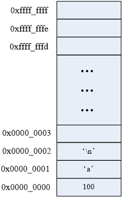
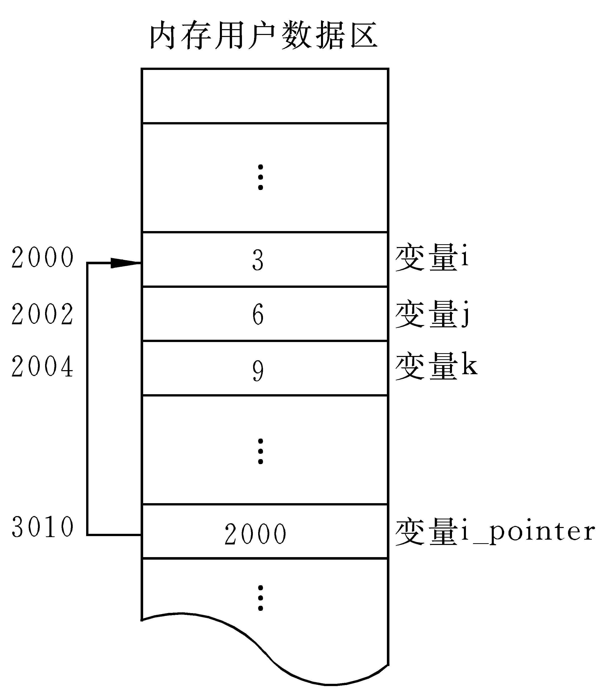
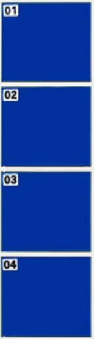
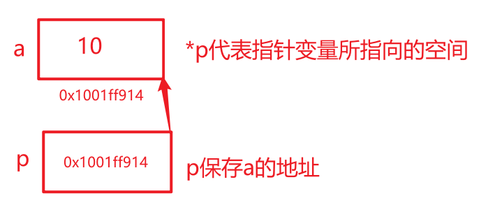

<!DOCTYPE lake>
<h1 data-lake-id="cG5FJ" id="cG5FJ"><span data-lake-id="u1d2b53c7" id="u1d2b53c7">概述</span></h1><ul list="u33d8f88e"><li data-lake-id="u2ed0101a" fid="u0bebe51b" id="u2ed0101a"><span data-lake-id="u0024bf4a" id="u0024bf4a">内存地址</span></li></ul><ul data-lake-indent="1" list="u33d8f88e"><li data-lake-id="u8ec9c50d" fid="u0bebe51b" id="u8ec9c50d"><span data-lake-id="ua4acdb9f" id="ua4acdb9f">在计算机内存中，每个存储单元都有一个唯一的地址(内存编号)。</span></li></ul><ul data-lake-indent="2" list="u33d8f88e"><li data-lake-id="u0357d362" fid="u0bebe51b" id="u0357d362"><span data-lake-id="ufedd55d7" id="ufedd55d7">通俗理解，内存就是房间，地址就是门牌号</span></li></ul><p data-lake-id="uea35fddf" id="uea35fddf" style="text-indent: 2em; padding-left: 2em; text-align: left"></p><ul list="u33d8f88e" start="2"><li data-lake-id="u1a5491db" fid="u0bebe51b" id="u1a5491db"><span data-lake-id="u68de0c3d" id="u68de0c3d">指针和指针变量</span></li></ul><ul data-lake-indent="1" list="u33d8f88e"><li data-lake-id="uaddb06a4" fid="ua2a6bdfe" id="uaddb06a4"><span data-lake-id="u9a9730dc" id="u9a9730dc">指针（Pointer）是一种特殊的变量类型，它用于存储内存地址。</span></li></ul><ul data-lake-indent="2" list="u33d8f88e"><li data-lake-id="u2c7a2d8d" fid="ua2a6bdfe" id="u2c7a2d8d"><span data-lake-id="ua4e72f1c" id="ua4e72f1c">指针的实质就是内存“地址”</span></li></ul><ul data-lake-indent="1" list="u33d8f88e" start="2"><li data-lake-id="uacd073d2" fid="ua2a6bdfe" id="uacd073d2"><span data-comment-id="47165863" data-lake-id="uc2b496fc" id="uc2b496fc">指针变量就是存储这个地址的变量</span><span data-lake-id="u16b28e87" id="u16b28e87">。</span></li></ul><p data-lake-id="u4334404c" id="u4334404c" style="text-indent: 2em; padding-left: 2em"></p><ul list="ua90f6541"><li data-lake-id="u10af513c" fid="u92083a3f" id="u10af513c"><span data-lake-id="u9cbcafc0" id="u9cbcafc0">指针作用</span></li></ul><ul data-lake-indent="1" list="ua90f6541"><li data-lake-id="u708e9104" fid="u92083a3f" id="u708e9104"><span data-lake-id="ue09162a6" id="ue09162a6">可间接修改变量的值</span></li></ul><p data-lake-id="ufe6e6265" id="ufe6e6265"><br/></p><h1 data-lake-id="pDSnN" id="pDSnN"><span class="lake-fontsize-12" data-lake-id="ub6f93e8f" id="ub6f93e8f">指针变量的定义和使用</span></h1><ul list="u954b6e47"><li data-lake-id="ub267eff9" fid="u374613e7" id="ub267eff9"><span data-lake-id="uc43ced6b" id="uc43ced6b">指针也是一种数据类型，指针变量也是一种变量</span></li><li data-lake-id="u008b6102" fid="u374613e7" id="u008b6102"><span data-lake-id="u15abf270" id="u15abf270">指针变量指向谁，就把谁的地址赋值给指针变量</span></li></ul><p data-lake-id="u09e26d41" id="u09e26d41"><strong><span data-lake-id="uf96021b0" id="uf96021b0">语法格式：</span></strong></p><span class="yuque-card-unsupported">[codeblock]</span><ul list="u7184c39e"><li data-lake-id="uc6b810bf" fid="ue921159d" id="uc6b810bf"><code data-lake-id="ue4dd4e7e" id="ue4dd4e7e"><span data-comment-id="47165917" data-lake-id="ua74e09cc" id="ua74e09cc">&amp;</span></code><span data-comment-id="47165917" data-lake-id="u06e316f7" id="u06e316f7"> 叫</span><strong><span data-comment-id="47165917" data-lake-id="u735c9e4f" id="u735c9e4f">取地址</span></strong><span data-comment-id="47165917" data-lake-id="u066a07fa" id="u066a07fa">，返回操作数的内存地址</span></li><li data-lake-id="udde1308d" fid="ue921159d" id="udde1308d"><span data-lake-id="ufcf4148f" id="ufcf4148f">在定义指针变量时：</span></li></ul><ul data-lake-indent="1" list="u7184c39e"><li data-lake-id="ue15761c4" fid="ue921159d" id="ue15761c4"><code data-lake-id="ue613e308" id="ue613e308"><span data-lake-id="u874dd4d4" id="u874dd4d4">*</span></code><span data-lake-id="u9f95d2d6" id="u9f95d2d6"> 号表示所声明的变量为指针类型</span></li><li data-lake-id="u78a9dea2" fid="ue921159d" id="u78a9dea2"><span data-lake-id="uef74fe68" id="uef74fe68">指针变量要保存某个变量的地址</span></li><li data-lake-id="ue74e7639" fid="ue921159d" id="ue74e7639"><span data-comment-id="47165929" data-lake-id="uefdb7b4b" id="uefdb7b4b">指针变量的类型</span><span data-lake-id="ua13accbd" id="ua13accbd">比这个变量的类型多一个</span><code data-lake-id="u7a511f8d" id="u7a511f8d"><span data-lake-id="u2b4521e9" id="u2b4521e9">*</span></code></li></ul><ul list="u7184c39e" start="3"><li data-lake-id="u068b7369" fid="ue921159d" id="u068b7369"><span data-lake-id="uaa4904df" id="uaa4904df">在使用指针变量时：</span></li></ul><ul data-lake-indent="1" list="u7184c39e"><li data-lake-id="u4898f095" fid="ue921159d" id="u4898f095"><code data-lake-id="uf336589c" id="uf336589c"><span data-lake-id="u28034ae5" id="u28034ae5">*</span></code><span data-lake-id="uecdac548" id="uecdac548"> 叫</span><strong><span data-lake-id="u3084bc79" id="u3084bc79">解引用</span></strong><span data-lake-id="u00e54e5d" id="u00e54e5d">，可以操作（读取、修改）指针所指向的变量的值</span></li><li data-lake-id="u562546d5" fid="ue921159d" id="u562546d5"><code data-lake-id="u93692cdf" id="u93692cdf"><span data-lake-id="u80ee8583" id="u80ee8583">*</span></code><span data-lake-id="ua81a501c" id="ua81a501c"> 号可以用来操作指针所指向的内存空间</span></li></ul><p data-lake-id="u11c82b08" id="u11c82b08"><br/></p><p data-lake-id="u346832fc" id="u346832fc"><strong><span data-lake-id="u0948d4d9" id="u0948d4d9">示例代码：</span></strong></p><span class="yuque-card-unsupported">[codeblock]</span><p data-lake-id="u00206fd0" id="u00206fd0" style="text-align: center"></p><p data-lake-id="u4fa646fc" id="u4fa646fc"><br/></p><h1 data-lake-id="eZ3X2" id="eZ3X2"><span class="lake-fontsize-12" data-lake-id="u83ce5e46" id="u83ce5e46">通过指针间接修改变量的值</span></h1><ul list="u3d0894c9"><li data-lake-id="ude85fdd0" fid="u2f4c5dc9" id="ude85fdd0"><span data-lake-id="u55944c12" id="u55944c12">指针变量指向谁，就把谁的地址赋值给指针变量</span></li><li data-lake-id="uad0169a7" fid="u2f4c5dc9" id="uad0169a7"><span data-lake-id="u1763b9d3" id="u1763b9d3">通过 </span><span data-lake-id="ua7cfebdc" id="ua7cfebdc" style="color: #DF2A3F">*指针变量</span><span data-lake-id="u4fef193e" id="u4fef193e"> 间接修改变量的值</span></li></ul><span class="yuque-card-unsupported">[codeblock]</span><h1 data-lake-id="PVz7T" id="PVz7T"><span class="lake-fontsize-12" data-lake-id="u58ada460" id="u58ada460">指针大小</span></h1><ul list="uacbf6972"><li data-lake-id="ufb685abf" fid="u2b13ab6c" id="ufb685abf"><span data-lake-id="u1413196e" id="u1413196e">使用sizeof()测量指针的大小，得到的总是：4或8</span></li><li data-lake-id="u6fcf451d" fid="u2b13ab6c" id="u6fcf451d"><span data-lake-id="ub959d2d2" id="ub959d2d2">sizeof()测的是指针变量指向存储地址的大小</span></li></ul><ul data-lake-indent="1" list="uacbf6972"><li data-lake-id="ud1759186" fid="u2b13ab6c" id="ud1759186"><span data-lake-id="ua6e66f71" id="ua6e66f71">在32位平台，所有的指针（地址）都是32位(4字节)</span></li><li data-lake-id="ua162fc09" fid="u2b13ab6c" id="ua162fc09"><span data-lake-id="u894ae24b" id="u894ae24b">在64位平台，所有的指针（地址）都是64位(8字节)</span></li></ul><p data-lake-id="u7d8e704d" id="u7d8e704d"><span data-lake-id="ub886f609" id="ub886f609">​</span><br/></p><span class="yuque-card-unsupported">[codeblock]</span><p data-lake-id="u534eff6a" id="u534eff6a"><span data-lake-id="u370baaf0" id="u370baaf0">​</span><br/></p><h1 data-lake-id="AEtnZ" id="AEtnZ"><span data-comment-id="30958830" data-lake-id="uc3ba8ea2" id="uc3ba8ea2">指针步长</span></h1><ul list="ucd604b44"><li data-lake-id="u6e1ee402" fid="u4514d6c7" id="u6e1ee402"><span data-lake-id="u4ba45eab" id="u4ba45eab">指针步长指的是通过指针进行递增或递减操作时，指针所指向的内存地址相对于当前地址的偏移量。</span></li><li data-lake-id="u5408852d" fid="u4514d6c7" id="u5408852d"><span data-lake-id="ub4206b39" id="ub4206b39">指针的步长取决于所指向的数据类型</span><code data-lake-id="u7b43694f" id="u7b43694f"><span data-lake-id="u4a796062" id="u4a796062">type</span></code><span data-lake-id="u3777525d" id="u3777525d">。</span></li></ul><ul data-lake-indent="1" list="ucd604b44"><li data-lake-id="ueedf68e0" fid="u4514d6c7" id="ueedf68e0"><span data-lake-id="ubb465b93" id="ubb465b93">指针加n等于指针地址加上 </span><code data-lake-id="ub4a875f9" id="ub4a875f9"><span data-lake-id="u5a13687e" id="u5a13687e">n</span></code><span data-lake-id="u4a335549" id="u4a335549"> 个 </span><code data-lake-id="u4de939ba" id="u4de939ba"><span data-lake-id="ud15efdda" id="ud15efdda">sizeof(type)</span></code><span data-lake-id="u869b32db" id="u869b32db"> 的长度</span></li><li data-lake-id="u29ee1fbc" fid="u4514d6c7" id="u29ee1fbc"><span data-lake-id="uda51dd67" id="uda51dd67">指针减n等于指针地址减去 </span><code data-lake-id="u83953b9f" id="u83953b9f"><span data-lake-id="u63eeeb59" id="u63eeeb59">n</span></code><span data-lake-id="u86df8ee8" id="u86df8ee8"> 个 </span><code data-lake-id="u56807bab" id="u56807bab"><span data-lake-id="u02bb96cc" id="u02bb96cc">sizeof(type)</span></code><span data-lake-id="u9c10910d" id="u9c10910d">  的长度</span></li></ul><p data-lake-id="ua36f5150" id="ua36f5150"><span data-lake-id="u0971067c" id="u0971067c">​</span><br/></p><span class="yuque-card-unsupported">[codeblock]</span><p data-lake-id="ue63f6798" id="ue63f6798"><span data-lake-id="u0c5893b0" id="u0c5893b0">​</span><br/></p><h1 data-lake-id="jkoC6" id="jkoC6"><span data-lake-id="uf7775465" id="uf7775465"> 野指针和空指针</span></h1><ul list="u310d7f44"><li data-lake-id="uc508850a" fid="u0dfe6f5d" id="uc508850a"><span data-lake-id="u1dd5fcb0" id="u1dd5fcb0">指针变量也是变量，是变量就可以任意赋值</span></li><li data-lake-id="udd7a1507" fid="u0dfe6f5d" id="udd7a1507"><span data-lake-id="uc94905fd" id="uc94905fd" style="color: #DF2A3F">任意数值赋值给指针变量没有意义，因为这样的指针就成了野指针</span></li></ul><ul data-lake-indent="1" list="u310d7f44"><li data-lake-id="u730cd62d" fid="u0dfe6f5d" id="u730cd62d"><span data-lake-id="u2d61cfc0" id="u2d61cfc0">此指针指向的区域是未知(操作系统不允许操作此指针指向的内存区域)</span></li></ul><ul list="u310d7f44" start="3"><li data-lake-id="uf2ddc7ea" fid="u0dfe6f5d" id="uf2ddc7ea"><span data-lake-id="u797a6963" id="u797a6963" style="color: #DF2A3F">野指针不会直接引发错误，操作野指针指向的内存区域才会出问题</span></li><li data-lake-id="u728da716" fid="u0dfe6f5d" id="u728da716"><span data-lake-id="ud83aa88e" id="ud83aa88e">为了标志某个指针变量没有任何指向，可赋值为NULL</span></li></ul><ul data-lake-indent="1" list="u310d7f44"><li data-lake-id="u5da14330" fid="u0dfe6f5d" id="u5da14330"><span data-lake-id="u7f01d154" id="u7f01d154">NULL是一个值为0的宏常量</span></li></ul><span class="yuque-card-unsupported">[codeblock]</span><p data-lake-id="u8a519483" id="u8a519483"><br/></p><h1 data-lake-id="OzYl8" id="OzYl8"><span data-lake-id="u0f60b48c" id="u0f60b48c"> 多级指针</span></h1><ul list="u3b596833"><li data-lake-id="uf15298d8" fid="uccf0b13d" id="uf15298d8"><span data-lake-id="u5d48c8a4" id="u5d48c8a4">C语言允许有多级指针存在，在实际的程序中一级指针最常用，其次是二级指针。</span></li><li data-lake-id="ud52a66e0" fid="uccf0b13d" id="ud52a66e0"><span data-lake-id="u0fc94433" id="u0fc94433">二级指针就是存储了【一级指针变量地址】的指针。</span></li></ul><span class="yuque-card-unsupported">[codeblock]</span><h1 data-lake-id="tYCLd" id="tYCLd"><span data-lake-id="u23084037" id="u23084037">指针与常量</span></h1><p data-lake-id="u7f13678c" id="u7f13678c"><strong><span data-lake-id="u425abbba" id="u425abbba">语法格式</span></strong></p><span class="yuque-card-unsupported">[codeblock]</span><p data-lake-id="uec0cd7b9" id="uec0cd7b9"><span data-lake-id="u73cb71b1" id="u73cb71b1">记忆技巧：从左往右看，跳过类型，看修饰哪个字符</span></p><ul list="ud5a94b6a"><li data-lake-id="u877953e5" fid="u5cfe258b" id="u877953e5"><span data-comment-id="48022970" data-lake-id="u4623476d" id="u4623476d">如果是</span><code data-lake-id="u8e3d1484" id="u8e3d1484"><span data-comment-id="48022970" data-lake-id="uebced243" id="uebced243">*p</span></code><span data-comment-id="48022970" data-lake-id="ub9482f3d" id="ub9482f3d">， 说明指针指向的变量内容不能改变（即：值不能改）</span></li><li data-lake-id="u888bcb01" fid="u5cfe258b" id="u888bcb01"><span data-lake-id="uaafa78d6" id="uaafa78d6">如果是</span><code data-lake-id="ua36be921" id="ua36be921"><span data-lake-id="u29d96fd8" id="u29d96fd8">p</span></code><span data-lake-id="u5a9f5554" id="u5a9f5554">，说明指针的指向不能改变      （即：地址不能改）</span></li></ul><p data-lake-id="ua40e9f0e" id="ua40e9f0e"><strong><span data-lake-id="u041123b1" id="u041123b1">完整实例</span></strong></p><span class="yuque-card-unsupported">[codeblock]</span>